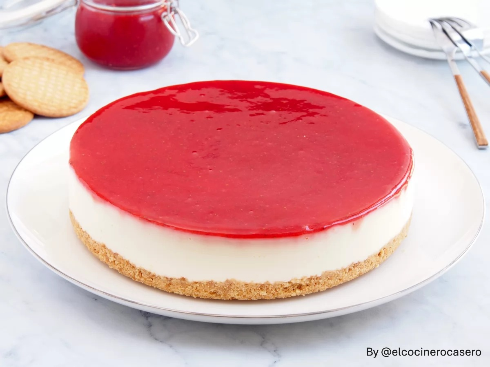

Tarta De Queso Philadelfia
Home

DESCRIPCIÓN
Esta receta de tarta de queso Philadelphia es muy fácil de preparar y solo tenemos que tener en cuenta que
necesita bastante tiempo de nevera para que cuaje bien y esté bien fresquita, por lo que tendremos que
prepararla con la suficiente antelación. Las cantidades de la receta están calculadas para utilizar un molde
redondo de 20 cm de diámetro. Es importante forrar la base del molde con papel vegetal para que después podamos
desmoldar y servir la tarta fácilmente.
Tarta de queso Philadelfia con base de galledas molidas, encima está el queso Philadelfia blanco cuajado con
gelatina y sobre el mismo una fina capa de mermelada roja de fresa.
INGREDIENTES
- 150 g de galletas tipo María
- 100 g de mantequilla
- 4 hojas de gelatina
- 400 ml de nata líquida para montar
- 80 g de azúcar
- 500 g de queso crema (tipo Philadelphia)
- 150 g de mermelada de fresa
STEPS
- Trituramos las galletas en un robot de cocina
- Derretimos la mantequilla y cuando se enfríe, la añadimos a las galletas
- Mezclamos bien las galletas con la mantequilla
- la base del molde con papel vegetal
- Colocamos la masa de galletas en la base del molde y metemos en la nevera
- Ponemos la gelatina a hidratar en agua fría 15 minutos
- Calentamos la nata con el azúcar y cuando hierva, añadimos el queso crema y cocinamos 5 minutos
- Añadimos la gelatina escurrida y dejamos que la mezcla se atempere
- Vertemos la mezcla en el molde y refrigeramos un mínimo de 3 horas
- Añadimos la mermelada de fresa por la superficie de la tarta
- Refrigeramos otros 30 minutos
- Desmoldamos la tarta y servimos
WEBGRAFÍA